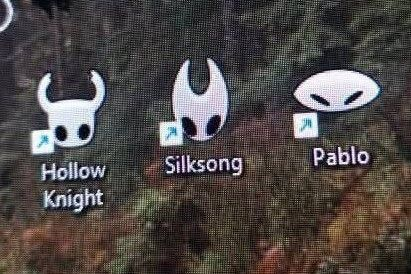
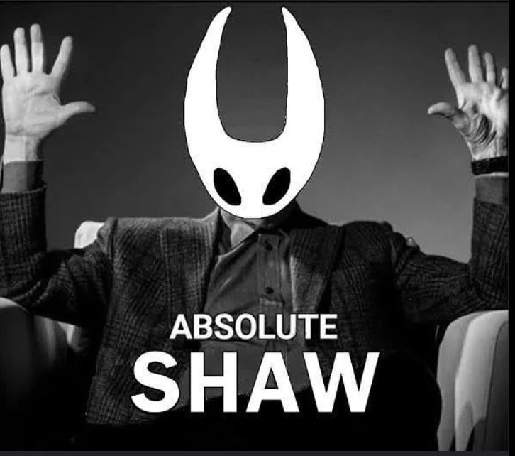
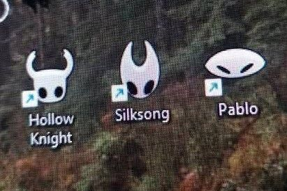
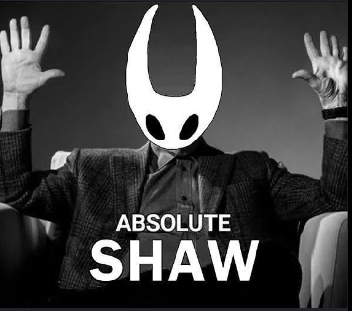

Hollow Knight
Sumérgete en Hallownest y descubre sus misterios.
Más info
Sumérgete en Hallownest y descubre sus misterios.
Más infoAcompaña a Hornet en tierras desconocidas.
Más infoFanart en una galería interactiva.
Ver galería
 


